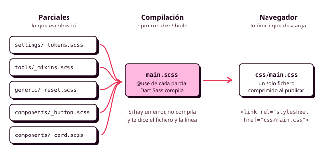

3. Apuntes de Sass
Cuando una hoja de estilos implementa un sistema de diseño completo, crece deprisa: los tokens, el reset, los estilos de las etiquetas y una docena de componentes con sus variantes. En un único fichero de mil líneas es difícil encontrar nada, y en un equipo es imposible que dos personas lo toquen a la vez sin pisarse. Sass es la herramienta que usan casi todos los equipos para repartir el código en ficheros pequeños y para generar con pocas líneas lo que se repite (RA2-j).

En este apartado vemos las ocho ideas básicas de Sass, en el mismo orden que su guía oficial: preprocesado, variables, anidación, parciales, módulos, mixins, extend y operadores.
1. Preprocesado
Un preprocesador es un programa que lee un fichero escrito en un lenguaje parecido a CSS, pero con más posibilidades, y lo compila, es decir, lo traduce a CSS normal. Tú escribes los ficheros de Sass, el compilador genera el main.css y el HTML enlaza ese main.css. El navegador nunca ve tus ficheros de Sass.
CSS ya tiene variables y anidación propias, pero Sass trabaja antes de que el código llegue al navegador, y eso le permite repartir el código en muchos ficheros, reutilizar grupos de declaraciones y hacer cálculos.
Instalar y compilar
La versión oficial se llama Dart Sass y se instala con npm dentro de tu proyecto:
Para no escribir el comando de compilación cada vez, guárdalo como script en el package.json:
{
"scripts": {
"dev": "sass --watch scss/main.scss:css/main.css",
"build": "sass --style=compressed --no-source-map scss/main.scss:css/main.css"
}
}
Mientras trabajas, npm run dev vigila tus ficheros y recompila cada vez que guardas. Antes de publicar, npm run build genera el CSS comprimido, que pesa menos y es el que piden las WSG.
Añade node_modules al .gitignore, pero sube el css/main.css compilado, porque es lo que necesita GitHub Pages. Los scripts quedan escritos en el proyecto, así que cualquier persona del equipo que lo descargue compila exactamente igual con npm install y npm run dev.
Lee la terminal
El navegador ignora los errores de CSS, pero Sass hace lo contrario: si algo está mal, no compila y te dice el fichero y la línea. Si un cambio no aparece en el navegador, mira primero la terminal, porque probablemente Sass ha fallado y el main.css se ha quedado en la versión anterior.
SCSS
Sass tiene dos sintaxis, y en este módulo usamos SCSS (ficheros .scss), que tiene las mismas llaves y puntos y coma que CSS. Cualquier CSS válido es SCSS válido, así que puedes pegar en un fichero .scss el CSS que ya tienes y mejorarlo poco a poco.
En SCSS hay dos tipos de comentarios: los de una línea con //, que desaparecen al compilar y son solo para quien lee el código, y los de CSS con /* */, que llegan al main.css.
2. Variables
Las variables de Sass empiezan por $ y guardan un valor para reutilizarlo:
Al compilar, Sass las sustituye por su valor y desaparecen. En cambio, las propiedades personalizadas de CSS (--color-primary) llegan al navegador y existen mientras la página está abierta. De ahí sale la regla del proyecto:
- Los tokens van en propiedades personalizadas, porque tienen que cambiar con el modo oscuro, redefinirse en los componentes y llamarse igual que en Figma.
- Las variables de Sass se usan para lo que solo hace falta al compilar, como los breakpoints. Tienen que ser de Sass porque
var()no funciona dentro de la condición de una media query.
3. Anidación
La anidación de Sass funciona como la de CSS, con una diferencia que te va a servir mucho: & se sustituye por el texto del selector, así que puedes pegarle cualquier cosa detrás y formar nombres de clase nuevos.
.card {
padding: var(--space-4);
&:hover { box-shadow: var(--elevation-2); } // .card:hover
&__title { font: var(--font-heading-3); } // .card__title
&--featured { border-width: 2px; } // .card--featured
}
Así, todo un componente queda dentro de un único bloque y el CSS compilado tiene selectores de una sola clase. Los nombres card__title y card--featured siguen la convención BEM, que verás en el apartado 5.
No anides de más
Anidar demasiado complica el mantenimiento y genera selectores largos y muy específicos. Con &__ y &--, casi nunca necesitarás más de un nivel de anidación.
4. Parciales
Un parcial es un fichero cuyo nombre empieza por guion bajo (_button.scss). Sass no genera un CSS propio para él: solo se compila como parte de otro fichero que lo carga. Es la razón más importante para usar Sass, porque te permite tener un fichero por componente, y que cada persona del equipo trabaje en el suyo sin tocar los de las demás.
5. Módulos
Para cargar un parcial dentro de otro fichero se usa @use, y Sass los junta todos en un único main.css. Se escribe el nombre sin el guion bajo y sin la extensión:
@use también da acceso a las variables, funciones y mixins del fichero que carga, a través de su nombre, que actúa como espacio de nombres: variables.$breakpoints. Con as * puedes usarlos sin prefijo, y es lo habitual con las herramientas que usas en todas partes. Cada fichero carga con @use lo que necesita, aunque otro fichero ya lo haya cargado.
@import está obsoleto
En tutoriales antiguos verás @import en lugar de @use. Está obsoleto y desaparecerá, así que usa siempre @use. Los módulos solo funcionan con Dart Sass, que es el que instalamos.
6. Mixins
Un mixin es un grupo de declaraciones con nombre que puedes incluir en cualquier regla. Se define con @mixin y se usa con @include, y puede recibir parámetros con un valor por defecto:
// _mixins.scss
@mixin focus-ring($color: var(--color-primary)) {
outline: 3px solid $color;
outline-offset: 2px;
}
Todos los componentes usan el mismo anillo de foco, y si un día decides cambiarlo, lo cambias en un sitio. Un mixin también puede recibir un bloque de reglas, que se coloca donde está @content. Así se escriben los breakpoints:
@mixin from($width) {
@media (width >= $width) {
@content;
}
}
.court-list {
@include from($bp-md) { grid-template-columns: repeat(2, 1fr); }
}
Usa los mixins para cosas pequeñas, porque cada @include copia el código en el CSS final. Para reutilizar un componente entero, usa su clase en el HTML.
7. Extend
@extend hace que un selector comparta las propiedades de otro. Se usa sobre todo con los placeholders, selectores que empiezan por % y que solo aparecen en el CSS si alguien los extiende:
%message {
padding: var(--space-3);
border: 1px solid var(--color-border);
}
.message-success { @extend %message; border-color: var(--color-success); }
.message-error { @extend %message; border-color: var(--color-error); }
/* CSS compilado: los selectores se agrupan */
.message-success, .message-error {
padding: var(--space-3);
border: 1px solid var(--color-border);
}
.message-success { border-color: var(--color-success); }
.message-error { border-color: var(--color-error); }
A diferencia de un mixin, que copia el código en cada sitio, @extend agrupa los selectores y el código no se repite. Pero tiene efectos difíciles de prever (cambia el orden de las reglas y no funciona dentro de media queries), y por eso muchos equipos lo evitan. En tu proyecto, usa un mixin pequeño o una clase base y deja @extend para cuando entiendas bien lo que hace.
8. Operadores
Sass hace cálculos al compilar con los operadores +, -, * y % (resto). La división se hace con math.div(), que viene en el módulo sass:math, porque la barra / ya no divide:
Es útil para convertir los números de Figma a unidades relativas. Los píxeles de Figma pasan a rem dividiendo entre 16:
Antes de seguir
Antes de pasar al siguiente apartado, comprueba que:
npm run devcompila sin errores y recompila al guardar.- Tus tokens son propiedades personalizadas y solo usas variables de Sass para lo que se necesita al compilar.
- Cada componente está en su propio parcial y no tiene más de un nivel de anidación.
- Cargas los ficheros con
@use, nunca con@import. npm run buildgenera unmain.csscomprimido.
Recursos
- Sass Basics: la guía oficial
- Sass en español, de Manz (lenguajecss.com)
- Sass Playground, para probar código sin instalar nada